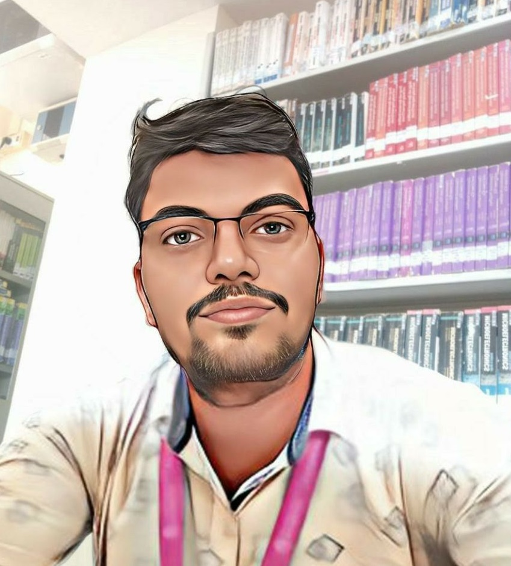

About Me

I am currently pursuing MCA at MSRIT, Bangalore, in my final year. My interests include web development, YouTube video making, and playing football.
Educational Background
I have completed my class 10 with 10 CGPA in Sainik School Bijapur(Karnataka). Class 12th in the same school with a 79.4%. Completed B.Sc.(PCM) in KLE's B.K. College Chikodoi with 91.92% and now I am currently pursuing my Master of Computer Applications (MCA) at MSRIT, Bangalore, and I am in my final year. I have a strong academic background with a focus on gaining as much as Knowledge possible apart from the syllabus.
Skills
- Web Technology: HTML, CSS, JavaScript, Reactjs, Expressjs, Nodejs etc.
- Programming Languages: C, C++, Java, Python
- Tools and Technologies: Cloud Computing(AWS), SQL, Android Studio,
Work Experience
I have gained valuable experience through projects and work opportunities. One notable experience includes Woking in a team to develop website for exam monitoring system.
Projects
Project 1: Digi-Fashion (A E-commerce web application):
Developed an application that could register customers and suppliers, customers could order items
and employees could deliver items, all these events could be monitored by the manager.
Project 2: IoT project (Solar powered smart home system):
A model was Developed that could store electric power from the solar panels and use it efficiently
using various sensors fitted in the home this could reduce the amount of electricity used.
Project 3 - Grade Generator:
This application could take data from the user and Grade could be calculated and stored it in the
local storage.
Hobbies and Interests
In addition to my academic and professional pursuits, I am passionate about playing football. I believe in maintaining a healthy work-life balance, and football serves as a great way to unwind and stay active.
Web Development Journey
My journey into web development started with a fascination for creating interactive and visually appealing websites. I am particularly interested in Reactjs, Nodejs android Application Development.
YouTube Channel
On my YouTube channel, I create content focused on Computer science. Viedeos are not uploaded frequently but I manage to upload one or two videos on weekly basis.
Contact Information
For professional inquiries or collaboration opportunities, feel free to reach out to me:
Email: karansj4723@gmail.com
Pnone Number: +918147147632
Personal Motto
"Find a new version of you, every passing hour."
Volunteer Work
Volunteered as a Science teacher in a High-school.